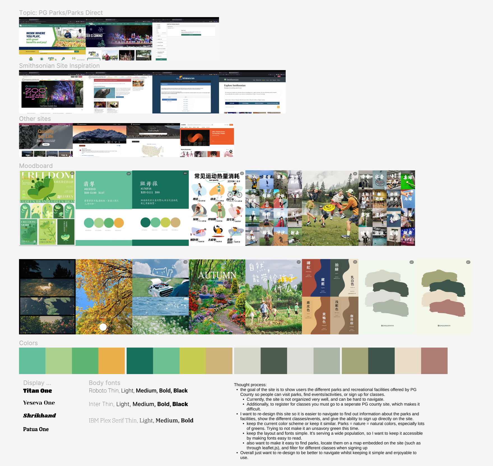

The goal of this project was to complete a successful multipage
re-design of an existing website using Figma. Requirements
included components and animations.
For this project, I chose the Prince George's County Parks and
Recreation website. The website contains useful information, but
can be difficult to navigate due to redundant linking. A
screenshot of the current site can be seen below.

The next step for this project was to create a moodboard with different sources of inspiration for the final design, alongside color palettes and fonts. Images were taken from other government sites and RED, a Pinterest-esque social media app. Color palettes were generated from these images using Adobe Color Wheel. Google Fonts was used to find different font options.

The next step of the design process was to create low-fidelity
wireframes/layouts of the final design. For this step, I first
created the basic silhouettes of each page I wanted to include.
For this step, I created basic components to format using Auto
Layout, so I could build off them later. I also included simple
text to show different sections of the webpage, and where various
content could be placed.
After recieving feedback from the instructional team and my peers,
I began to edit and build the final product.
During this stage I changed layouts for areas of the homepage, and
worked to incorporate more images to the design. I also worked to
refine the components so they would be more polished for the final
version.
I sourced vector art from open-source vector art websites, and
incorporated them into my re-design in various ways. For example,
hovering over the footer will bring a deer and squirrel into view.
I also made the park vector art on the homepage a navigation
element as well. Some minor vector images were created using Adobe
Illustrator, such as the recreation of the site logo.
However, at this stage, I also encountered some limitations of
Figma. For example, there are limits on how many interactions can
be added to a single element. This meant for my calendar, I could
not show it highlighting the selected day in yellow and showing
the events for December 2nd at the same time. The same applied to
the global navigation menu in the header.
As a result, I limited the interactions I used on some elements in
order to ensure there were examples of different interactions on
the final product.
Finally, I added in simple animations when navigating between
pages and clicking on different page elements. Then, I began to
populate the re-design with images and text taken from the Prince
George's County Parks and Recreation site. I finalized small
design changes to account for the sizing of photos and added
scrolling to account for text overflow.
This was a challenging re-design, as government websites need to
provide large amounts of information for the general public.
However, I believe I was successful in creating a re-design which
is more visually appealing to users and easy to navigate. I gained
valuable experience from this project, and it made me re-consider
my own approach to design and presentation.
The final wireframes and prototype (best viewed in fullscreen) are
viewable below.
Due to a technical issue with Figma, the wireframes are not
viewable at the moment. My apologies for this inconvience, please
refer to the video at the top for a demo.